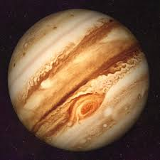
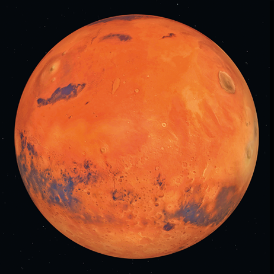
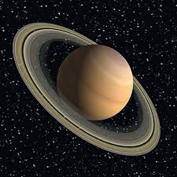
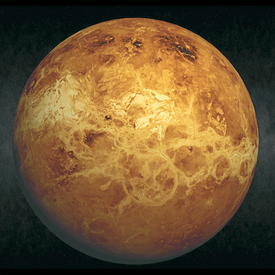

Jupiter
Der Jupiter ist der größte aller Planeten. Der Jupiter ist ein Gasplanet: Er besteht größtenteils aus Gas. Auf dem Jupiter gibt es den sogenannten Großen Roten Fleck, den du auch auf dem Foto sehen kannst: Der Große Rote Fleck ist ein riesiger Gaswirbel, der sogar größer als unsere Erde ist.

Mars
Der Mars ist der Erde sehr ähnlich. Daher ist der Mars interessant für Raumfahrt-Missionen. Raumsonden und Roboterfahrzeuge untersuchen die Marsoberfläche. Dabei versucht man herausfinden, ob es vielleicht einmal Leben auf dem Mars gegeben hat.

Saturn
Der Saturn ist ein sehr großer Planet, der größtenteils aus Gas besteht. Der Saturn ist etwas kleiner als der Jupiter. Der Saturn ist von Ringen umgeben, die du auch auf dem Foto sehen kannst. Diese Ringe bestehen aus vielen kleinen Gesteinsbrocken.

Venus
Auf der Venus sind die Bedingungen lebensfeindlich: Aus den Wolken regnet es ätzende Schwefelsäure. Die Temperatur ist mit 480 °C sehr hoch. Die hohe Temperatur auf der Venus kommt daher, dass die Atmosphäre fast vollständig aus dem Gas Kohlenstoffdioxid besteht. Dieses Gas hält die Wärme in der Atmosphäre „gefangen“.

Erde
Wir leben auf dem Planeten Erde. Die Erde hat genau den richtigen Abstand zur Sonne. So ist es weder zu warm noch zu kalt. Die durchschnittliche Temperatur auf der Erde beträgt 15 °C.

The real shit you need to know...

EIN ECHTER SIGMA
Das Traumpaar unserer Generation... (sie wissen es nur noch nicht)
Quellen der Bilder und begleit Texte:
https://static.klett.de/software/shockwave/prisma_nawi_ol/pn_pnnw78ov610/index.htmlAlle benutzten Bilder sind Uhrheberrechtlich geschützt und dürfen ohne eine Einwilligung nicht bentzt werden (Schere)